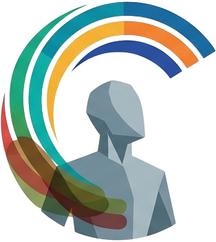

chromafixColorblind accessibility · 7 palettes · 0 dependencies
chromafix remaps the CSS variables your UI already uses. Pick a
color-vision-deficiency type and every token flips to a palette that stays
distinguishable, instantly and with no filter. Try it on the
#preview panel below.
Live preview
Open the eye button at the bottom-right and choose a vision type. Only this panel is targeted, so you can compare it against the page around it. Your choice persists on reload. Switch the panel's own base theme with light / dark: the seven palettes are light-first, so an active type renders light in either mode.
Buttons, links, borders, meters and body copy all draw from the same six tokens, so a single switch recolors the entire surface coherently.
The seven palettes
Wiring it up
// map your existing variables to semantic roles import { createChromafix } from "chromafix-a11y"; createChromafix({ tokens: { "--pv-bg": "background", "--pv-surface": "surface", "--pv-border": "border", "--pv-text": "text", "--pv-muted": "muted", "--pv-primary": "primary", }, target: "#preview", // omit to recolor the whole page });